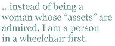

“That’s from the gentleman over there.”
The bartender handed me a glass and pointed to the other side of the bar. I sat up as straight as I could from my wheelchair to see up over the bar where she was pointing. I followed her gaze until I saw a 30-something-year-old guy smile and lift his own glass in the air. The first thing I noticed was his shirt, but tried to give him the benefit of the doubt. Maybe he had just been to a Hawaiian-themed party, maybe it had been “wear-an-obnoxious-flowered-shirt-to-work” day. I tried to look past it because besides the awful shirt, his hair was dark and wavy, and he owned a killer smile.I raised my martini in the air and nodded back. Ann Marie and I had only been there for 15 minutes. Already, the night was looking up.
It only took a moment before my nice-smile, good-hair guy was standing in front of me, pumping my hand up and down and introducing himself. I’m usually instantly annoyed when guys think that buying a drink has bought them a seat next me, but most of them didn’t look like him. I told him my name and allowed him to pull up a seat beside us. If I had been keeping score, I’d say I was winning
Then he began talking.
“I hope you don’t mind that I bought you a drink.”
I smiled and shook my head. Mind? I was wallowing in it.
“I just saw you sitting over here and wanted to give you some props.”
I could hear Ann Marie take a deep breath in, just when my smile went south. “Props?”
“Yeah, I mean, you deserve props for being in a wheelchair, but still getting out of the house. I mean, that takes courage.”
My drink became heavy in my hand. I put it down and sat up straighter. I should’ve known better.
“And just so I’m clear, exactly what is my alternative?” I said my words slowly, leaned forward and looked him in the eye.
He fidgeted in his seat and scrunched his brow.
“I just meant …” he stopped, took a long swig of his drink and smiled.
But I was over it. Ann and I grabbed our purses and began scouting out another location before he could finish. I should’ve given him props for wearing that shirt. It took more courage to leave the house in that than leaving mine in a wheelchair. I felt humiliated, ashamed, pissed off.
Before an automobile accident rendered me a quadriplegic and a lifetime wheelchair user, men sized me up as I walked across a room, and even if none approached me, I was playing the game. On the “field,” other women saw me as a possible threat. In one single glance, I was recognized as a woman.
Now, men and women still watch me cross a room, but instead of being a woman whose “assets” are admired, I am a person in a wheelchair first. It is undeniable that this is the first thing people will see. The next thought may be a woman in a wheelchair without a second thought to my appearance. Only after they can see past my wheels can they see any beauty between them. The average person only gets to stage one, averting their eyes before “woman” or “beauty” ever have a chance to enter their minds. “Desire” isn’t even in the running.
As a woman, I want to be offended if men stare at my breasts instead of my eyes, my ass in lieu of our conversation; I want to outright reject these stereotypical roles. But as a disabled women, I yearn for a small amount of this old “tits and ass” routine. Because I can’t even deny them the routine if I’m not offered, even for a moment, a chance to perform in it.
Beautiful... and paralyzed. I’m an anomaly men struggle with.
Most of the men I’ve met can’t just see me as a beautiful woman — an outright hot little number. There always a “for a” clause — a catch, if you will. I’m gorgeous … for a girl in a wheelchair.
I continually get verification of this fact.
***
“Excuse me ladies, do you have a cigarette I can have?” A strange guy loomed over our table, smiling and swaying.
Neesha and I followed his gaze to the spot on the table where her cigarette pack sat. She left them in plain sight — an instant attraction for anyone in the bar who, under sober circumstances, never considered buying them. But it was late enough in the night, enough drinks down, and the nonsmokers were ready to light up.
Neesha pulled a cigarette from her pack, handed it to him, and held her lighter within his reach. We waited as he lit it, ready for him to leave and get back to our conversation. Instead, he pulled up a seat.
“Thanks a lot. I usually don’t smoke,” he slurred, “I usually don’t even drink, but it’s been a rough night.” He took a long, expert drag off the cigarette and looked up at me expectantly. I was just tipsy enough to take the bait.
“Oh yeah? What’s going on?”
“My girlfriend and I broke up… I mean well, not technically, but it’s over.” he took a sip of beer for emphasis. “It’s definitely over.” His face clouded, his eyes went sad. My fifth cosmopolitan arrived in front of me.
“Why’d you break up with her? Why’s it over?” Neesha and I leaned forward on our elbows toward him. We were girls soaking up girl drama.
“Well, we were kind of fighting today, so I went over there to either try to work things out or get my stuff back. She only opened the door a crack and told me it wasn’t a good time. I pushed the door open the whole way and found some guy sitting on her bed with his shirt off.”
We made the right “shit” response. It was indeed a shitty story, and I felt bad for the poor guy.
“Oh man, that sucks.”
“Yeah, that really sucks.” Neesha agreed.
“I know, and I really loved her, and we had great sex. I don’t know what to do.” He put his head in his hands.
“Well dude, there’s nothing you can do.”
He excused himself then, said he needed to get back to his friend. Neesha and I told him to try and cheer up, then went back to more important business: checking out the hot waiter and ordering more drinks.
It wasn’t long after Neesha went to the bathroom for the umpteenth time that he ventured back over and snagged Neesha’s seat closest to me. He jumped back into his saga, as if he’d never walked away.
“I know I’m not a good-looking guy — I’m never going to find someone else.”
I looked him over; he had nice eyes, and obviously didn’t have a problem introducing himself to people. He wasn’t exactly someone I’d pick out in a crowded bar, but he certainly wasn’t so awful that he’d never find someone new to have great sex with.
“C’mon, don’t say that. You’ll meet someone.” I tried to be a trooper, pump up his self-confidence.
“No, really. On a scale from 1-10, I’m not even a 1.”
“Stop it. That’s not true.”
“Ok, then what am I? What number would you give me?”
I wasn’t expecting I’d have to give him an exact number, but since he asked, I leaned back and looked him over. Nice eyes, but dumb shoes. Friendly, but self-depreciating. Decent face, but no smile. My answer teetered between complete honesty and a small fib. Judging from his day, I needed to give him a high score and boost his confidence, but alcohol opened the “honest” receptors in my brain and inhibited me from saying the right thing completely.
“A seven — you’re definitely a high seven.” Five and ½.
He took it well. “Well, I guess it could be worse, but look at you. You’re super hot. You’re totally a 10.” I wasn’t sure how I had managed to get into a “rating” conversation, but I wasn’t exactly comfortable with it. I was flattered that he found me attractive, but having never been able to accept a compliment graciously, I waved my hand, ordered another drink.
“No, I mean it. Your face is incredible, your hair is awesome, and your arms are chiseled.” I felt my face become hot, a smile began to spread. I swallowed it down and tried to look cool. He continued, “if you weren’t in that wheelchair…”
The blood drained from my cheeks as fast as it had filled; I was suddenly aware of how lightheaded I was, the music that filled the bar, my hips. He took a drag off a cigarette and smiled. He was done, but I wasn’t.
“Go ahead…if I wasn’t in this wheelchair…what?”
His voice carried steady and strong. “Well, you know. If you weren’t in that wheelchair, you wouldn’t give me the time of day.”
I pulled my body back from the table and snapped, “what the hell does that mean?”
“Well c’mon, be honest. You know you’ve lowered your standards because you’re in a wheelchair; you had to.”
***
If relationships with able-bodied men are so damn tricky, what’s the alternative?
Daniel — a close friend of mine, and a big supporter in my pursuit to kiss every hot guy I see — believes that guys in chairs see a beautiful woman, who is also in a chair, as “approachable” because we’re both in the same situation.
“They come up to you, knowing that their chair isn’t an issue like with other woman. They think they’re coming up to someone who won’t turn them down because you understand. Then you just turn your head. Poor guys.”
But I share none of these hard feelings.
Recently, my doctor asked if I was seeing anyone. When I shook my head, she suggested I attend an annual “wheelchair water skiing” event in the summer. She half gasped and half laughed when I responded:
“I’m not dating a guy in a chair. Seriously, I would have to be in love and 100% smitten to do it. It’s too much drama — one of my main goals for the rest of my life is to minimize drama.”
Dating someone in a chair doesn’t do this.
I’ll get the door.
No, I got it.
Our chairs would bang off each other, as the door swings open and shut without either of us getting through. Eventually, an onlooker would feel sorry for us and open it. Drama.
And that would probably be the least of it.
We would probably have “typical” arguments, but I’m sure able-bodied people don’t argue over who gets the best parking space if we both drive somewhere. At the grocery store, we’d both sit in the aisle, staring up at the coffee we need on the top shelf. We’d have something long in our hands (probably a spatula we retrieved from another aisle), each hitting the can in an attempt to coax it down until it came careening down and knocked one of us out.
But there are some hot guys in wheelchairs, and it’s not that I don’t find them attractive — I just don’t want to deal with someone else’s disability AND my own. Perhaps this makes me a cripple-snob — maybe a “sell-out,” shunning my own people; it could possibly make me just like all the able-bodied guys who shun me because of my chair, but I refuse to settle. Wheelchair or no wheelchair, I shouldn’t have to.
As the years have passed, my hips have begun to mold nicely between my wheels in a way that’s surprised me; as much as I’ve resisted the notion of being part of the disabled community, comfort and acceptance of my new “short” status has set in. With this new mentality, I’ve learned that it’s OK if not everyone finds me beautiful, or even a part of our sexual culture. I still battle the demons that Barbie first gave birth to in my childhood — I still wonder how legs that can’t move can possibly be alluring. But I firmly believe that a new category within the definition of beauty can be formed. With this one, wheels turning to cross a room take on a level of sexiness that a pair of hips can’t begin to challenge. That’s where true props are welcome.
Amanda Leskovac is 32 years old and lives in Pittsburgh, PA. She earned her undergraduate degree in Writing from Slippery Rock University, her Master of Arts in English from Youngstown State University and an MFA in nonfiction Creative writing from Chatham University. She’s currently teaching composition and creative writing while she works on her memoir, Cock-Eyed View. She celebrated her 11th anniversary in a chair this year.